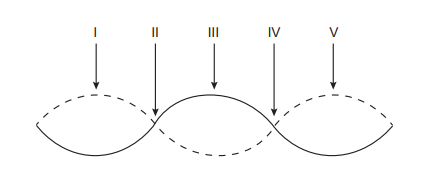

🔹 Ir para Problema 37 | 🔹 Ir para Problema 39
(ENEM)
Um experimento para comprovar a natureza ondulatória da radiação de micro-ondas foi realizado da seguinte forma: anotou-se a frequência de operação de um forno de micro-ondas e, em seguida, retirou-se sua plataforma giratória. No seu lugar, colocou-se uma travessa refratária com uma camada grossa de manteiga. Depois disso, o forno foi ligado por alguns segundos. Ao se retirar a travessa refratária do forno, observou-se que havia três pontos de manteiga derretida alinhados sobre toda a travessa. Parte da onda estacionária gerada no interior do forno é ilustrada na figura.

De acordo com a figura, que posições correspondem a dois pontos consecutivos da manteiga derretida?
1) O que acontece nos pontos onde a manteiga derrete?
Eles ficam onde a energia da onda é
(amplitude maior).
2) Numa onda estacionária, como chamamos esses pontos de amplitude máxima?
Chamamos de
da onda.
Assinale a alternativa correta: